We shall begin this chapter by describing the symbols used to represent hits
The sign for a base hit should be followed by a number identifying the zone of a fielder close to where the hit was recovered or came to rest, or by letters identifying the zone in the field.
We define base hits in different categories:
The symbols for safe hits are as follows:
|
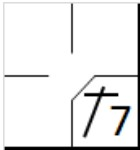 |
Safe one-base hit (to be recorded in the first base square). |

|
|
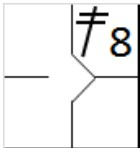 |
Safe two-base hit (to be recorded in the second base square). |
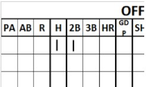 |

|
Safe three-base hit (to be recorded in the third base square). |

|
|
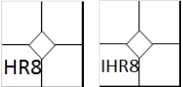 |
Safe four-base hit or home run (to be recorded in the home base square). If the batter scores a home run without hitting the ball out of play, write IHR with the position (e.g. IHR8) |

|
When a hit is written to the batter, it also must be written in the pitcher section of the score-sheet.
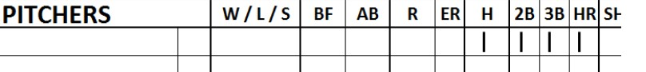
To give some examples of the different categories:
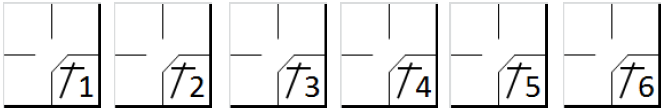


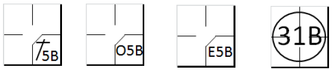
According to rule 9.05 of the OBR, the official scorer shall credit a batter with a base hit when:
In the descriptions of safe hits we have introduced a fundamental concept: Ordinary effort by a fielder. Ordinary effort is the effort that a fielder of average skill at a position in that league or classification of leagues should exhibit on a play, with due consideration given to the condition of the field and weather conditions. [OBR Definition of Terms Ordinary Effort] This standard, called for several times in the Official Scoring Rules (e.g. Rules 9.05(a)(3), 9.05(a)(4), 9.05(a)(6), 9.05(b)(3)(Base Hits); 9.08(b)(Sacrifices); 9.12(a)(1) Comment, 9.12(d)(2) Errors; and9.13(a), 9.13(b)(Wild Pitches and Passed Balls)) and in the Official Baseball Rules (e.g. Definition of Terms - Infield Fly)), is an objective standard in regard to any particular fielder.
In other words, even if a fielder makes his best effort, if that effort falls short of what an average fielder at that position in that league would have made in a situation, the official scorer should charge that fielder with an error [OBR Definition of Terms Comment]. We should say straight away that this is a very flexible concept that can vary from one scorer to another. We will therefore try to give guidelines based on the rules themselves and on experience.
A first recommendation is not to demand absolute perfection from the defense: in the case of a particularly difficult performance, award a hit rather than an error. The scorer will simply record the actions as occurred leaving it to the manager to judge the players for having reacted too late or having moved too slowly. It is also necessary to bear in mind that balls are often hit with great force, making them extremely difficult to handle.
One very important factor that can influence the scoring of hits is the defensive positions that the players assume before the hit. This determines the difficulty of the play. Clearly, a hit will be more difficult to catch if the players are closer, given the higher velocity of the ball. Before any action takes place, therefore, be aware of the positions of the fielders.
No error should be charged to a fielder who loses time feinting or turning to another base, even if, in the scorer’s judgment, a putout on first base would have been more possible and safer. Moreover, no article of the OBR provides for an error being charged against an outfielder if the ball bounces in front of him and over his head.
This is easy to understand, as he was unable to touch the ball in the first instance, not being close enough, and he could not catch it after it had bounced.
Moreover, there are some positions for which it is advisable to think twice before charging an error. Let us look at them:
The pitcher - When the hit is made, the pitcher is still completing his recovery movement after having delivered the ball, and is leaning forward, which means that a hit going over him would be very difficult to control, particularly if it had been hit hard. It therefore becomes difficult to make a play and the hit is therefore automatically considered a valid hit. Obviously, this is not the case if the hit is so slow as to enable the pitcher to return to a normal position in time to catch it. For the above reasons, the pitcher is also the only player exonerated from error if a fast ball passes between his legs.
The catcher - The catcher’s position is unlike that of the other fielders and this gives him a disadvantage in certain situations. A throw made to prevent a stolen base is not considered an error, provided that the runner does not subsequently advance. There may also be situations in which it is unclear whether to award a wild pitch or a passed ball; if in doubt, we suggest you give a wild pitch, bearing in mind how uncomfortable it is for the catcher to make certain movements.
The shortstop - He is the infielder with the greatest area to cover. This means he is obliged to deal with frequent difficult catches which, for that very reason, cannot be considered errors. For example, a sideways lunge for the ball, a catch at the edge of the red dirt, in front of third base or with his back to the diamond, must all be considered difficult.
The second baseman - In the event of a ground ball hit towards second base, which may be caught with ordinary effort, and which the fielder fails to catch, an error shall be charged in the absence of any obvious and relevant sideways motion by the fielder.
The third baseman - The zone in which the third baseman operates is where the majority of
balls hit within the diamond end up, and where they are the fastest. Many of these balls are therefore difficult to
control, given their speed, particularly if they bounce before entering the third base zone. Indeed, if they bounce,
the balls may take an unnatural trajectory, increasing the difficulty of the catch. It is important to pay close
attention to the speed of the ball in order to judge the difficulty of the catch.
NOTE: Similar considerations apply to the first baseman when the batter is left-handed.
Outfielders - If a ball hit to the outfielders bounces in front of a fielder who has come forward to catch it on the fly and passes over his head, credit the batter with a two-base hit (or more), rather than a single, and an extra base error.
Another important concept that should be borne in mind in assessing the value of hits is that the official scorer shall always give the batter the benefit of the doubt. A safe course for the official scorer to follow is to score a hit when exceptionally good fielding of a ball fails to result in a putout [OBR 9.05(a) Comment].
NO HIT IS awarded, according to rule 9.05(b) of the OBR when a
| WBSC | Translation in the scoring tool | Tool |
|---|---|---|

|
/* The first batter wins first base on 'Base on ball' */ action { batter -> BB } /* The batter hits a hit and advances the runner. The runner doesn't touch his base and the defense calls. */ action { batter -> O1 , runner1 -> A14 } |
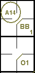 |
Example 2:
In this case the scorer should pay careful attention to the position of the batter-runner at the time of the
interference, insofar as it may be possible to charge a base hit and a putout. In the event of a putout, it is an
automatic putout for the runner who committed the interference and a fielder’s choice for the batter-runner.
With the first case, the runner interfered with the second baseman before reaching second base. With the
second case the runner went over second base to third base when he interfered with the third baseman.
| WBSC | Translation in the scoring tool | Tool |
|---|---|---|
|
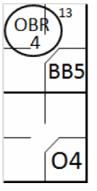 |
/* The first batter wins first base on 'Base on ball' */ action { batter -> BB } /* interference before the runner wins the second base */ action { batter -> O1 , runner1 -> OBR13-4 } |
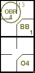 |
|
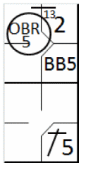 |
/* The first batter wins first base on 'Base on ball' */ action { batter -> BB } /* interference after the runner wins the second base */ action { batter -> O1 , runner -> + OBR13-5 } |
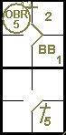 |